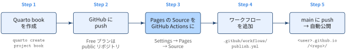

ノートTL:DRs

- Settings → Pages の Source を「GitHub Actions」にしても，デプロイ用ワークフロー（Step 4）がなければ何も公開されない． - Source の設定とワークフローの追加は必ずセットで行う．Step 1：Quarto book を作成する
quarto create project book mybook
cd mybook
quarto preview # ローカルで表示を確認- book プロジェクトの出力先は既定で
_book/になる - ビルド成果物はコミットしないので
.gitignoreに追加すること
/.quarto/
/_book/Step 2：GitHub に push する
git init && git add . && git commit -m "init quarto book"
git remote add origin git@github.com:<user>/<repo>.git
git push -u origin main- Free プランでは，GitHub Pages を使えるのは public リポジトリだけ
- private のまま公開するには Pro / Team 以上のプランが必要
Step 3：Pages の Source を GitHub Actions にする

- リポジトリの Settings → Pages → Build and deployment → Source で GitHub Actions を選ぶ．
- 画面に出る「Jekyll」「Static HTML」の Configure は押さなくてよい．ワークフローは次の Step で自分で書く．
Step 4：ワークフローを追加する
.github/workflows/publish.yml を作成する．
.github/workflows/publish.yml
name: Publish Quarto Book
on:
push:
branches: [main]
workflow_dispatch:
permissions:
contents: read
pages: write
id-token: write
concurrency:
group: pages
cancel-in-progress: false
jobs:
build:
runs-on: ubuntu-latest
steps:
- uses: actions/checkout@v7
- uses: quarto-dev/quarto-actions/setup@v2
- uses: quarto-dev/quarto-actions/render@v2
with:
to: html # PDF も出すと TeX が必要になるため HTML だけビルド
- uses: actions/configure-pages@v6
- uses: actions/upload-pages-artifact@v5
with:
path: _book # Quarto book の出力先
deploy:
needs: build
runs-on: ubuntu-latest
environment:
name: github-pages
url: ${{ steps.deployment.outputs.page_url }}
steps:
- id: deployment
uses: actions/deploy-pages@v5| 項目 | 役割 |
|---|---|
permissions |
pages: write と id-token: write がないとデプロイできない |
render の to: html |
quarto create の book テンプレートには PDF 出力も含まれる．PDF を出す場合は TinyTeX のセットアップが別途必要 |
path: _book |
_quarto.yml で output-dir を変えた場合はそれに合わせる |
environment: github-pages |
初回デプロイ時に自動作成される |
Step 5：main に push して公開を確認する
git add .github/workflows/publish.yml
git commit -m "ci: publish quarto book to github pages"
git push- Actions タブでワークフローの成功を確認する
deployジョブのログ末尾にReported success!と公開 URL が出ていれば完了- 公開 URL は Settings → Pages にも表示される

Google Analytics を設定する（任意）
- 旧ブログ（Jekyll）では，GA4 が発行する gtag.js のスニペットを
<head>に手で貼り付けていました． - 一方，Quarto では
_quarto.ymlに測定 ID を書くだけで，全ページに gtag.js が挿入されます
Step 1. アカウントとプロパティを作成する
- Google Analytics にアクセスする
- アカウントを設定する（基本的には自分の Google アカウントを入力）
- Admin（管理） をクリックする
- Create Property をクリックする
- Property setup（プロパティ名・タイムゾーン・通貨など）を入力する
- 利用規約に同意すると，Google Analytics のダッシュボードが開く
2. 測定 ID を取得する
- Admin → データストリーム → ストリームを追加 → ウェブ で，公開 URL（
https://<user>.github.io/<repo>/）を登録する． - 発行された測定 ID（
G-XXXXXXXXXX）を控える．
3. _quarto.yml に設定する
_quarto.yml
book:
site-url: https://<user>.github.io/<repo>
google-analytics:
tracking-id: "G-XXXXXXXXXX"
anonymize-ip: true # 任意：IP アドレスを匿名化
cookie-consent: true # 任意：Cookie 同意バナーを出し，同意後に計測する- book プロジェクトでは
website:ではなくbook:の下に書く - 測定 ID は公開 HTML に埋め込まれる値なので，リポジトリにコミットしてよい
- push して再デプロイした後，GA の レポート → リアルタイム で自分のアクセスが計測されれば完了
Tips
| 症状・状況 | 対処 |
|---|---|
| コードセル（Python / R）を含む章のビルドが失敗する | _quarto.yml に execute: freeze: auto を設定し，ローカルで quarto render してから _freeze/ をコミットする．Runner に実行環境を用意しなくて済む |
| ワークフローが動かない | Settings → Actions → General で Actions が無効化されていないか確認する |
| main 以外のブランチからデプロイすると拒否される | github-pages environment は既定でデフォルトブランチからのデプロイだけを許可する．Settings → Environments → github-pages で許可するブランチを追加する |
| カスタムドメインを使いたい | Settings → Pages の Custom domain に入力し，DNS を設定してから Enforce HTTPS を有効にする |
| ワークフローを書かずに公開したい | ローカルで quarto publish gh-pages を実行し，Source を「Deploy from a branch」（gh-pages / /(root)）にする |